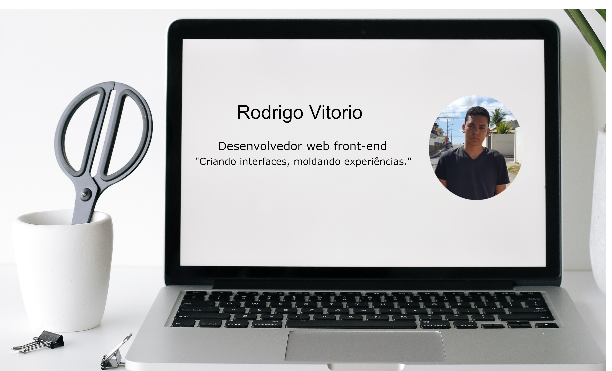

Sobre mim

Meu nome é Rodrigo Ferreira Vitorio Batista e sou um desenvolvedor front-end. Há um ano, comecei a me dedicar à programação, adquirindo experiência em HTML5, CSS3 e JavaScript. Durante esse tempo, tive a oportunidade de criar diversos projetos e também participei do programa de desenvolvimento chamado Unidev, na Universidade UNIME, onde pude aplicar meus conhecimentos em diferentes projetos, sou estudante de Engenharia da Computação e tenho previsão de formatura em dezembro de 2023. Durante meu curso, tive a oportunidade de participar de projetos na faculdade, como o Unidev, um núcleo de desenvolvimento próprio da instituição, cujo objetivo é envolver os alunos em suas respectivas áreas de atuação. Agora, estou buscando ampliar minha experiência e conhecimento em desenvolvimento, visando aprimorar minhas habilidades e contribuir para projetos desafiadores.
Ao longo do tempo, dediquei meu tempo ao estudo da programação, participando de cursos voltados para o desenvolvimento front-end. Atualmente, possuo os seguintes certificados:
Curso em video
- Curso HTML5 e CSS3: módulo 1 de 5 [40 HORAS]
- Curso HTML5 e CSS3: módulo 2 de 5 [40 HORAS]
- Curso HTML5 e CSS3: módulo 3 de 5 [40 HORAS]
- Curso HTML5 e CSS3: módulo 4 de 5 [40 HORAS]
- Curso HTML5 e CSS3: módulo 5 de 5 [40 HORAS]
- Javascript [40 Horas]
- MySQL [40 Horas]
Udemy
Além disso, obtive experiências em outras áreas ao longo do tempo, como:
Van van comercial de bebidas inicio: 01/08/2020 termino: 01/04/2021
Victoriano odontologia inicio :01/09/2021 termino 30/11/2021